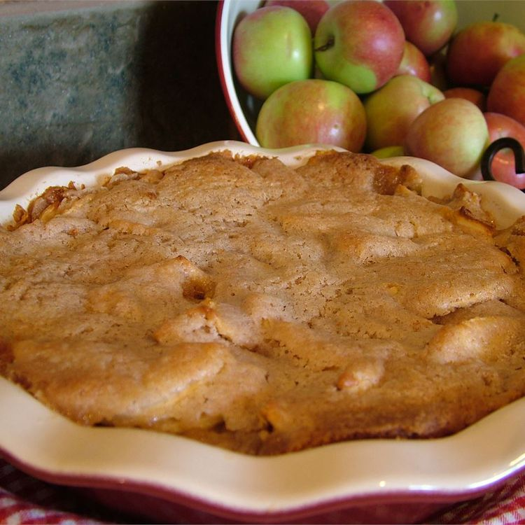

Swedish Apple Pie

Description
Swedish apple pie baked with a cinnamon crust.
Recipe posted on Allrecipes by FOXYMINIME
Image by an Allrecipes member
Ingredients
- 1 and 1/2 pounds Granny Smith apples - peeled, cored and sliced
- 1 tablespoon sugar
- 1 cup sugar
- 1 cup flour
- 3/4 cup melted butter
- 1 large egg
- 1 teaspoon cinnamon
Steps
- Preheat the oven to 350 degrees F (175 degrees C).
- Toss apples with 1 tablespoon sugar and pour them into a pie plate.
- Thoroughly mix together 1 cup sugar with flour, butter, egg, and cinnamon. Spread this evenly over the top of the pie.
- Bake in the preheated oven until apples have cooked and topping is golden brown, 40 to 45 minutes.